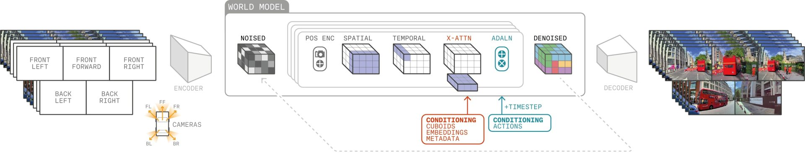

自律走行システムが予期せぬ事態に対処できるよう訓練することは、業界最大の課題の一つです。GAIA-2によって、私たちは動画生成の新たなフロンティアを切り開きます。それは、豊かに多様で制御可能な安全クリティカルな運転シナリオをスケーラブルに生成する力を開発者に与えることです。

支援・自動運転のためのAIを訓練・検証するには、多様で複雑な安全クリティカルなシナリオへの露出が必要です。しかし、実世界のデータ収集のみに頼ることはコストと時間の面で制約があります。突然の割り込み、予測不可能な歩行者の行動、極端な気象条件などの稀だが重大な状況を十分な量で収集することは困難です。
GAIA-2はこれを変えます。私たちは、グローバルな自律走行向けに作られた最先端の動画生成ワールドモデルを紹介することに興奮しています。GAIA-1の基盤を踏まえ、GAIA-2は合成データ生成を、強化された制御性・拡大された地理的多様性・より広い車両表現をもって限界まで押し進めます。汎用の生成モデルとは異なり、GAIA-2は複数のカメラ視点・多様な道路条件・重要なコーナーケースを扱う運転の複雑さをナビゲートするために専用設計されています。主要な運転要因に対するきめ細かい制御を提供することで、GAIA-2はエンジニアや研究者がより豊かでリアルな訓練シナリオを作成し、より安全で頑健な自律走行への道を加速するための力を与えます。
生成ワールドモデルは、訓練・評価のためのスケーラブルで多様な合成データを提供する強力なツールとして、支援・自動運転システムの進歩において台頭しつつあります。汎用のテキスト・動画や画像・動画モデルとは異なり、ドメイン固有の生成フレームワークは、運転ダイナミクスに対するきめ細かい制御を提供しなければなりません。それはエゴ車両の挙動、他の道路利用者との相互作用、道路トポロジー・天候・時刻などの環境要因にわたります。複数のカメラ視点にわたる時空間的な一貫性も同様に重要であり、正確な認識と推論を確保します。同様に重要なのは、曖昧な交差点や予測不可能な歩行者行動などの稀だが安全クリティカルなシナリオを合成する能力であり、これはより頑健で信頼性の高いAI運転システムを構築するために不可欠です。
GAIA-2はこれらの課題を満たすよう設計されています。潜在拡散アーキテクチャを広範なドメイン固有のコンディショニングと組み合わせ、マルチカメラ動画生成に対する精密な制御を可能にします。英国・米国・ドイツへの地理的カバレッジを拡大することで、GAIA-2はさまざまな運転条件にわたるリアリズムと適応性を高めます。完全に新しい運転シーンの生成から既存の映像へのダイナミックエージェントのシームレスな挿入まで、柔軟な動作モードで長期的で安定した動画合成をサポートします。コンディショニングパラメータは主要な運転要因を網羅し、エゴアクション変数（速度、ステアリング曲率など）・環境要因（天候、時刻）・道路構成（走行可能車線数、速度制限、横断歩道、交差点など）が含まれます。この制御レベルにより、GAIA-2は典型的なシナリオと高リスクのエッジケースの両方を生成し、自律AI運転モデルの訓練・テスト・検証のための強力な統合フレームワークとなっています。
GAIA-2は、さまざまな地理的・時間的・環境的条件に動的に適応することでシナリオの多様性の新レベルを解放します。これは頑健な検証に不可欠な要件です。GAIA-2は複数の国・時刻・天候条件・道路タイプにわたる運転シーンを合成できます。例えば、英国の左側通行・米国の特徴的な道路標識・ドイツの欧州式レーンマーキングを再現することができます。
地理的多様性を超えて、GAIA-2は時刻と天候条件の容易な変調を可能にします。シナリオを夜明け・正午・夜間、あるいは晴れ・雨・霧の条件の間でシームレスに移行させることができます。また、都市・郊外・高速道路環境にわたるスムーズな適応もサポートします。
リアルで多様かつ精密に制御されたシナリオを生成することで、GAIA-2は広範な場所固有の実世界データ収集への依存を減らします。これによりテストと検証のワークフローを加速し、AI運転システムが地域間で汎化し、ドメインシフトに効果的に適応し、通常のシナリオとエッジケースシナリオの両方で確実に機能するよう支援します。
動画：GAIA-2が生成したシーンの多様性の例。英国・米国・ドイツの複数の地域で、異なる照明条件と天候条件において生成されたシーン。
路上テストは、一般的な交通パターンから稀な安全クリティカルな状況まで、実世界の運転条件の広大なスペクトルを捉えます。しかし、記録されたログは各イベントについて単一の実現のみを提供します。それは特定のアクションセットによって決まる一つの環境条件・エージェント行動・結果の組み合わせです。これらのログは通常、動画映像と、特定の文脈においてある操作が適切であったかどうかを示すラベル付き運転アクションを対応させています。価値はありますが、このワンショットの視点では、天候・時刻・近くの道路利用者などの異なる条件のもとで展開し得る変化の全範囲を捉えることができません。
この制限は根本的な課題を浮き彫りにします：実世界データのみでは包括的な検証には不十分です。記録されたシナリオはすべて一つの可能な結果を表しており、エッジケースや稀なイベントのカバレッジにギャップが生じます。GAIA-2は実世界シナリオを拡張・拡大することでこのギャップを橋渡しし、状況が異なる条件でどのように展開するかを探索します。これによりテストカバレッジとモデルの頑健性が強化され、AI運転システムが現実に根ざしながら実世界の運転の完全な複雑さに備えられることを確実にします。
動画：他のすべての主要な運転特性を変えずに天候と照明条件を調整することで拡張された実世界シナリオ。
動画（タブ形式）：上の行は実際の実世界シナリオを示し、下の行は同一シーンのいくつかの生成バージョンを示します。
GAIA-2は強力な能力を導入します：ターゲットアクションに条件付けられた運転シーン全体の合成です。ブレーキングやスピード譲渡、Uターンの実行などのアクションを指定することで、GAIA-2はそのアクションが必要かつ適切であり続ける多様で文脈的に妥当な動画シーケンスを生成します。
重要なことに、生成されるシナリオは固定テンプレートの繰り返しではありません。代わりに、道路レイアウト・交通密度・天候条件・照明にわたって変化し、広範な条件のもとでの行動をテストします。このアクション条件付き生成はシナリオ空間の系統的・スケーラブルな探索を可能にし、検証を大幅に改善します。AI運転システムをアクション駆動の観測の豊かなスペクトルに露出させることで、GAIA-2は稀または高リスクの状況においても実世界に近い運転条件全体にわたってより頑健で安全かつ一貫した行動をサポートします。
動画（タブ形式）：特定のエゴアクションを中心に構築されたシナリオ。与えられたアクションについて、結果の動画はそのアクションが発生し得る可能な文脈の全範囲を捉えます。
ニアコリジョン・突然の割り込み・緊急ブレーキングなどの安全クリティカルなイベントは、実世界データで最も捉えにくいが最も本質的なシナリオの一つです。実世界の運転ログでの稀少性により、高リスクの意思決定に向けてシステムを系統的に訓練・検証することが困難になっています。GAIA-2はこれに対し、高リスクシナリオの精密で制御された生成を可能にします。すべてのエージェントの位置・動き・相互作用を明示的に定義することができます。衝突前状況のプロアクティブなシミュレーション・緊急操作（急激なブレーキングなど）・さらには分布外の行動（ドリフトや突然の障害物など）を生成できます。
この反復可能で制御されたシナリオ合成により、実世界データセットに少ない重要なコーナーケースによってテストカバレッジが拡大されます。制御された環境でシステムをこれらの安全クリティカルな条件に露出させることで、GAIA-2は公道での展開前にフェールセーフ動作の厳格な検証を可能にし、レジリエンスを構築します。
動画（タブ形式）：エゴ車両の状態を操作して危険な条件を生成するGAIA-2の能力を示す安全クリティカルなシナリオ。
動画（タブ形式）：危険な状況を生成するために他のエージェントに影響を与えるGAIA-2の能力を示す安全クリティカルなシナリオ。
安全クリティカルシナリオが自律システムの評価に最重要である一方、未見の都市・道路タイプ・カメラ構成・交通パターンなどの分布外（OOD）条件に汎化する能力も実世界での展開に同様に重要です。
GAIA-2は地理・車両プラットフォーム・環境要因にわたって大きな多様性を持つ多様なデータセットで訓練されています。これにより、驚くべき、珍しい、あるいは完全に新規な条件を合成し、その頑健性・汎化・創造的柔軟性についての洞察を提供することができます。これらのOODシナリオを合成することで、GAIA-2はドメインシフト下でのAVモデルの頑健性テストのための貴重なツールを提供し、より汎化可能でレジリエントな運転システムをサポートします。
動画（タブ形式）：分布外シナリオへの汎化の例。GAIA-2をエゴアクションに条件付けることで、訓練分布から完全に外れた状態を生成し、訓練中に遭遇したシナリオを大きく超えて拡張します。
多様で高忠実度の運転シナリオを生成するGAIA-2の能力は、支援・自動運転開発に具体的なメリットをもたらします。一般的な運転条件と捉えにくいコーナーケース（予測不可能なエージェント・極端な天候・異常な交通パターンなど）の両方を合成することで、テストカバレッジを大幅に拡大し、AI運転モデルが従来のデータ収集では許容されないほど豊かな訓練・評価シナリオのセットに露出されることを確実にします。
これにより、路上データのコストとリスクなしに大規模で反復可能なテストを可能にすることで、イテレーションサイクルが加速されます。開発者はモデルの弱点を系統的に調査して対処でき、より速い改善と実世界環境でのよりレジリエントなパフォーマンスをもたらします。シミュレーションと展開のギャップを橋渡しすることで、GAIA-2はAI運転システムの安全性・信頼性・準備状態を改善する上で重要な役割を果たします。
GAIA-2は高度に制御可能な動画生成ワールドモデルであり、エゴ車両のアクション・ダイナミックエージェント・シーン特徴に対するきめ細かい制御でリアルで多様な運転環境をシミュレートするよう設計されています。中核として、動画トークナイザーと潜在拡散ワールドモデルという2つの主要コンポーネントで構成されており、高忠実度のシミュレーションを生成するために協調して機能します。
動画トークナイザーは生のピクセル空間動画をコンパクトで意味論的に意味のある潜在空間に圧縮し、重要な詳細を保持しながら運転ダイナミクスの効率的な表現を可能にします。潜在拡散ワールドモデルは過去の観測・エゴ車両アクション（速度、ステアリング曲率など）・ダイナミックエージェントの行動（3Dバウンディングボックスに基づく）・環境要因（天候、時刻）・道路属性（車線数・速度制限・自転車・バスレーン・横断歩道・交差点・交通信号など）に基づいて将来の潜在状態を予測します。
図：動画トークナイザーと潜在拡散ワールドモデルを組み合わせたGAIA-2のアーキテクチャ
GAIA-2は外部モデルからの潜在コンディショニングもサポートします。CLIPエンベディングや運転向けに最適化されたプロプライエタリモデルを含み、多様な合成データアプリケーションへの適応性を高めます。このアーキテクチャにより、GAIA-2は複数の生成モードで動作できます。将来フレームの予測・全く新しいシーンの合成・既存の動画シーケンスの変更が可能です。構造化コンディショニングを活用することで、GAIA-2は複数のカメラビューにわたる時空間的一貫性を確保し、多様でスケーラブルかつリアルでコーナーケースに富んだAVシナリオ生成のための強力なツールとなっています。
GAIA-2は、英国・米国・ドイツにわたる多様な地理的・環境的・運転条件をカバーする大規模でキュレートされた動画シーケンスのデータセットで訓練されました。データ収集は複数の車両プラットフォーム・センサー構成・フレームレートにわたり、幅広いリアリズムと適応性を確保しています。モデルの汎化を改善するために、バランスのとれたサンプリング戦略を適用し、検証のために特定の地理的地域を保留しました。
GAIA-2のアーキテクチャ・訓練方法論・評価の詳細については、テクニカルレポートをご参照ください。
GAIA-2はGAIA-1に対する大きな進歩を導入し、合成データ生成における制御性・リアリズム・効率性の増大するニーズに対応しています。
拡張された制御性とリアリズム：
GAIA-2の主要な差別化要因の一つはその広い制御範囲であり、きめ細かいシナリオのカスタマイズを可能にします。GAIA-1が限られたコンディショニング能力を持っていたのに対し、GAIA-2は複数の地域（英国・米国・ドイツ）をサポートし、AI運転モデルを新しい運転ドメインに適応させることを加速する地域固有のデータ生成を可能にします。また、ネイティブのマルチカメラ動画生成を導入し、異なる視点間の空間的・時間的一貫性を確保します。これは多視点データから頑健な運転ポリシーを学習するために不可欠な能力です。GAIA-2はさらに、より包括的なドメイン固有パラメータのセットを拡張し、研究者が天候条件・道路属性・交通ダイナミクス・エージェントの行動をより高い精度で変更できるようにします。この強化された制御性は、GAIA-2を運転モデルの訓練・実世界データセットの拡張・稀だが安全クリティカルなエッジケースに対するAI運転システムのストレステストにおけるターゲットシナリオ生成のためのより強力なツールとします。
アーキテクチャの進歩：
GAIA-2はより合理化された動画生成パイプラインを導入し、シーンの一貫性と視覚的忠実度を向上させます。自己回帰トランスフォーマーによるフレームごとのトークン生成に依拠していたGAIA-1とは異なり、GAIA-2は潜在拡散モデルを伴う動画トークナイザーを採用し、シーケンス全体を連続潜在空間にエンコードします。このシフトにより時間的不連続性が排除され、モーションのスムーズさが向上し、マルチカメラの空間的一貫性が確保されます。その結果、より安定でスケーラブルかつリアルな生成フレームワークが実現します。
これらの強化がまとまって、GAIA-2を自律走行向け生成ワールドモデリングの新たなベンチマークとして位置づけ、より豊かでリアルかつ制御可能な合成運転シナリオを提供します。
GAIA-2は支援・自動運転向けの生成ワールドモデリングにおける大きな飛躍を表します。比類のない制御性・地理的多様性・高忠実度のマルチカメラ動画合成を組み合わせ、多様でエッジケースに富んだシナリオを系統的に生成します。テストカバレッジを拡大し、モデルのイテレーションを加速することで、GAIA-2はAI運転システムの頑健性を強化します。
スケーラブルな安全クリティカルな検証の必要性が高まるにつれて、GAIA-2のような生成モデルはシミュレーションと実世界での展開のギャップを埋めるために重要な役割を果たすでしょう。今後、制御性・シーンリアリズム・エージェント相互作用モデリングのさらなる進歩を探求し、自動運転AIの未来に向けた新たな可能性を解き放つことに期待しています。
GAIA-2が新たなベンチマークを設定する一方で、継続的な改善のための主要な分野があります：
これらの探索分野は、生成モデリングの限界を押し広げる継続的な取り組みを表しており、GAIA-2とその後継モデルが自律走行パイプラインにおいてさらに強力なツールになることを確実にします。